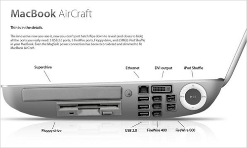

Das neue Apple MacBook AirCraft – Erste Bilder

Es soll wohl im zweiten Quartal 2008 auf den Markt kommen. Der Preis steht leider noch nicht fest, aber attraktiv ist das Teil allemal.
(via)
11 Kommentare zu "Das neue Apple MacBook AirCraft – Erste Bilder"
Seiten:
1
2
Seiten:
1
2
- Externe Links im selben Fenster öffnen
- Externe Links in neuem Fenster öffnen
Web2.0du.de
Endlich hat Apple einsehen gezeigt. Das ist ein Subnotebook, wie ich es mir Wünsche. Schlank und trotzdem alles dran!
Jupp
Aber was um alles in der Welt will ich mit einem Floppy drive? Gab es für Apple schon mal irgendetwas auf Diskette? Es passen mehr Daten unter meine Fingernägel als auf eine Diskette. Und so flach finde ich das Teil gar net.Oder ist das Ganze verzerrt?
Herschel Rubinstein
viel dicker als das macbook ist es auch nicht, nur ist halt mehr drin
crucible
Nicht schlecht, aber wo ist der SCSII-Anschluss?
Mist-Teil!
Herschel Rubinstein
du hast recht. die rattenfänger von apple versuchen uns mit zwei firewire800-buchsen zu ködern, was prinzipiell ja klappen könnte.
aber ohne einen anständigen scsii-anschluss kann man das teil eigentlich in die tonne kloppen.
Web2.0du.de
S-ATA fehlt. Das habe ich vorhin nicht gesehen.. Und wo zum Teufel ist der PCI-Express-Slot??
Lex Dildo a.k.a. Lord Ultra
Mir fehlt eindeutig Video 2000, das 5,25" Laufwerk und Beta. Achja, und Hyperdrive -- der macht den Corsalflug in weniger als 12 Parsec.
Lex Dildo
Was steht als nächstes auf der Liste? Mac ANTI Aircraft (Sie müssen sich vorstellen, dass ich da wo der Stern ist den Apfel reinmontiert habe). Ach nee, ich bin ja dumm, es gibt ja schon den Mac Leopard 2 (dito).
Herschel Rubinstein
sind die wLan-fähig??
creezy
Nun, der serielle Port fehlt, mein ImageWriter II langweilt sich. Und mal ehrlich die ADB-Keyboards waren doch auch viel besser, oder?